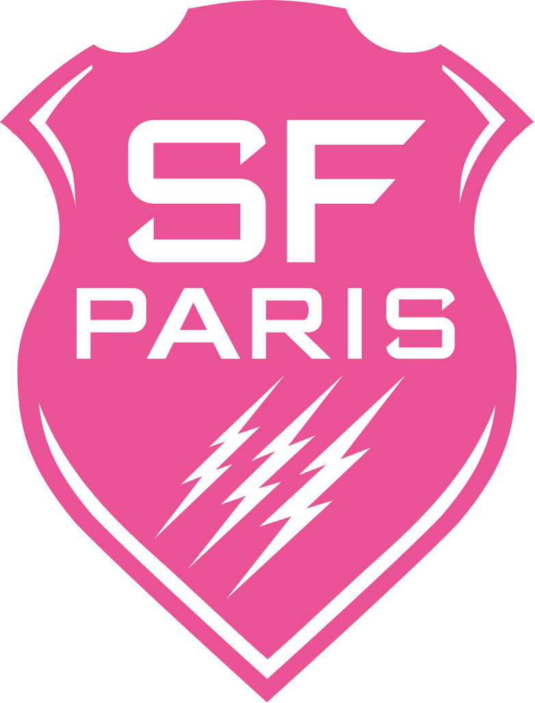

Stade Français Paris
Suivi joueurs · Staff médical & performance
Disponibles
0
Blessés / adaptés
0
Filtrer :
Tout l’effectif
Joueurs disponibles
Joueurs blessés
Sélectionne un joueur dans la liste pour voir le détail.